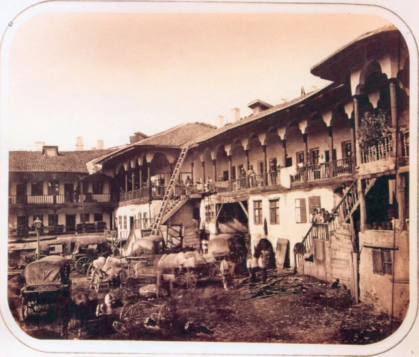
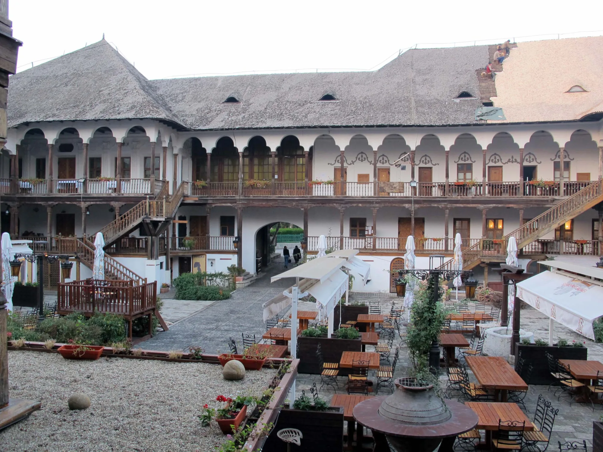

Bucharest, 1808
01
A city made
by arrivals.
Une ville faite d’arrivées.
Greek in the coffee houses. Armenian in the jewellery shops. Yiddish in Târgu Cucu, where the Great Synagogue still stands. German on the lips of Saxon craftsmen. Bulgarian in the cloth warehouses. French at the prince’s table. Romanian, at last, given the dignity of a public language on the street.
Grec dans les cafés. Arménien dans les boutiques de joaillerie. Yiddish à Târgu Cucu, où se dresse encore la Grande Synagogue. Allemand sur les lèvres des artisans saxons. Bulgare dans les entrepôts de draps. Français à la table du prince. Roumain, enfin, qui reçoit dans la rue la dignité d’une langue publique.
Manuc’s inn was built for this moving city: people needing a bed, a bargain, a letter, a meal, a witness, or simply the latest news from a Europe at war.
L’auberge de Manuc fut bâtie pour cette ville en mouvement : on y venait pour un lit, une affaire, une lettre, un repas, un témoin, ou les dernières nouvelles d’une Europe en guerre.
The man
Emanuel
Mârzaian.
Emanuel Mârzaian.
Born in Ruse in 1769 — Ottoman Rustchuk, on the Lower Danube — he came to Iași at twelve in the service of an Armenian merchant. Romanian first; then French; then Russian. Within a few years, contemporaries said he could move between a dozen languages.
Né à Ruse en 1769 — le Roustchouk ottoman, sur le bas Danube — il arrive à Iași à douze ans au service d’un marchand arménien. Roumain d’abord ; puis français ; puis russe. En quelques années, ses contemporains disent qu’il passe d’une douzaine de langues à l’autre.
His public names kept accumulating: merchant, banker, paharnic, Grand Dragoman of the Sublime Porte, and finally Manuc Bey of Moldavia. He never ruled the principality. But he knew how to make a room in which those who did might speak.
Ses titres publics s’accumulent : marchand, banquier, paharnic, grand drogman de la Sublime Porte, puis enfin Manuc bey de Moldavie. Il ne gouverne jamais la principauté. Mais il sait faire une salle où ceux qui gouvernent puissent parler.
The city arrives at the gate
Its streets kept
the guest list.
Ses rues gardèrent la liste des invités.
The inn did not stand beside an abstract crossroads. It stood inside an operating one: horses, textiles, currencies, officials and gossip, all looking for a roof.
L’auberge ne se dressait pas au bord d’un carrefour abstrait. Elle se dressait à l’intérieur d’un carrefour en activité : chevaux, textiles, monnaies, fonctionnaires et rumeurs, tous à la recherche d’un toit.

The costume, the language, the room
Half top hats.
Half kaftans.
La moitié en chapeaux. La moitié en caftans.
The seams of the city were visible everywhere. Boyars might wear Ottoman court dress one day and a “German” suit the next. Educated Romanians read French and German; Armenian, Greek, Ladino, Yiddish, Romanian and Saxon dialects lived in the same streets. By mid-century the city’s Jewish community counted for close to half of Iași, and Jewish houses here were active in banking and long-distance trade — the trade the courtyard served.
Les coutures de la ville étaient visibles partout. Les boyards pouvaient porter un jour la tenue de cour ottomane et le lendemain un costume « allemand » . Les Roumains instruits lisaient le français et l’allemand ; l’arménien, le grec, le ladino, le yiddish, le roumain et les dialectes saxons vivaient dans les mêmes rues. Au milieu du siècle, la communauté juive de la ville comptait pour près de la moitié d’Iași, et les maisons juives d’ici étaient actives dans la banque et le commerce au long cours — le commerce que servait la cour.
A continent at the door
02
The war, the room,
the treaty.
La guerre, la salle, le traité.
The war between Russia and the Ottoman Empire had run through the principalities since 1806. Behind it lay the calculations of Napoleon, Alexander I, Constantinople and Paris. Bucharest was a listening post, a rear base, and a city under pressure.
La guerre entre la Russie et l’Empire ottoman traverse les principautés depuis 1806. Derrière elle se jouent les calculs de Napoléon, d’Alexandre Ier, de Constantinople et de Paris. Bucarest est un poste d’écoute, une base arrière, et une ville sous pression.
For five months in 1811–12, Russian and Ottoman delegates met under Manuc’s roof. Kutuzov stood behind one side; Galib efendi led the other. The courtyard that had made room for travellers was now making room for peace.
Pendant cinq mois, en 1811-1812, les délégués russes et ottomans se réunissent sous le toit de Manuc. Koutouzov se tient derrière l’un des deux camps ; Galib effendi conduit l’autre. La cour qui avait fait une place aux voyageurs fait maintenant une place à la paix.
28 May 1812
The Treaty of Bucharest is signed at Manuc’s Inn.
Less than a month later Napoleon’s Grande Armée crosses the Niemen.
Moins d’un mois plus tard, la campagne de Russie (1812) […] tourne au désastre : la Grande Armée, forte de 600 000 hommes au départ, n’en ramène que 30 000.
On the map Russia takes the eastern half of Moldavia, between the Prut and Dniester: the territory soon called Bessarabia.
Sur la carte, la Russie prend la moitié orientale de la Moldavie, entre le Prut et le Dniestr : le territoire que l’on appellera bientôt la Bessarabie.
For Romania a merchant’s room begins an argument that will outlast the empires around it.
Pour la Roumanie, la salle d’un marchand ouvre une querelle qui survivra aux empires qui l’entourent.
What remains
The shape
of continuity.
La forme de la continuité.
Manuc died in 1817. The inn became a hotel, a theatre, a meeting place for Greater Romania, a nationalised property, and again a family property. The treaty was replaced by other treaties; the empires by successor states.
Manuc meurt en 1817. L’auberge devient un hôtel, un théâtre, un lieu de réunion pour la Grande Roumanie, un bien nationalisé, puis de nouveau un bien familial. Le traité est remplacé par d’autres traités ; les empires par des États successeurs.
But the galleries still ring a courtyard. The oak columns still carry rooms above the street. In a city rebuilt and renamed many times, that is not nothing.
Mais les galeries ceinturent encore une cour. Les colonnes de chêne portent encore des chambres au-dessus de la rue. Dans une ville reconstruite et renommée tant de fois, ce n’est pas rien.
